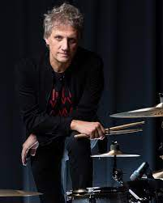
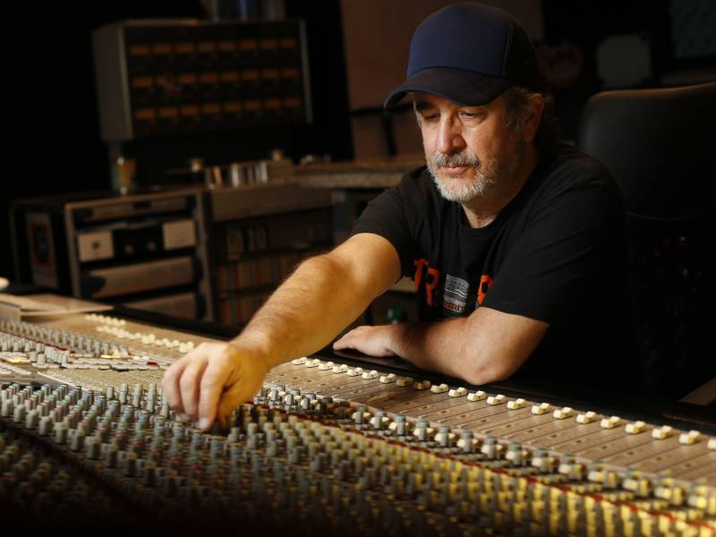

Gustavo Cerati

Gustavo Adrián Cerati (Barracas, Buenos Aires, 11 de agosto de 1959-Núñez, Buenos Aires, 4 de septiembre de 2014), conocido como Gustavo Cerati, fue un músico, cantautor y productor discográfico argentino que obtuvo reconocimiento internacional por haber sido el líder, vocalista, compositor y guitarrista de la banda de rock Soda Stereo. Parte de la prensa especializada y músicos lo consideran como uno de los artistas más influyentes del rock latinoamericano.
Para mas info
Zeta Bosio

Héctor Pedro Juan Bosio (San Fernando, 1 de octubre de 1958), más conocido como Zeta Bosio, es un músico de rock, productor discográfico y DJ argentino. Fue el bajista de la mítica e influyente banda de rock en español Soda Stereo, debido a esto, es considerado uno de los músicos más importantes de rock latino y en español, junto con sus ex-compañeros de banda Gustavo Cerati y Charly Alberti. Entre fines de 2013 y abril de 2014 fue el bajista de la banda chilena La Ley.1 Actualmente es miembro, líder y figura de la banda Shoot The Radio, banda que fundó en 2015 junto a Fernando Montemuro.
Para mas info
Charly Alberti
Carlos Alberto Ficicchia (Buenos Aires, 27 de marzo de 1963), más conocido como Charly Alberti, es un músico de rock argentino. Fue baterista de Soda Stereo y es líder y baterista de la banda Mole. Actualmente, es activista de la protección del medio ambiente, embajador ONU y fundador del grupo ambientalista R21 para una Latinoamérica Sustentable.
Para mas info
Tweety Gonzales
Fabián Andrés González Amado, más conocido como Tweety González (Buenos Aires, 3 de noviembre de 1963) es un tecladista y productor argentino. Fue pionero en el uso del sistema MIDI y de los sámplers en el rock argentino de los años ochenta. Fue el músico que interpretó los teclados y las programaciones con Soda Stereo durante más tiempo, razón por la cual suele ser llamado el «cuarto Soda».